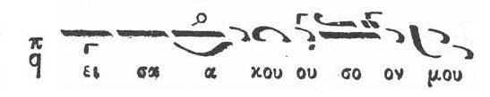
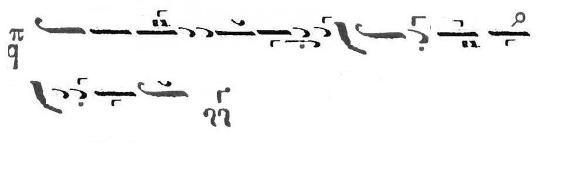
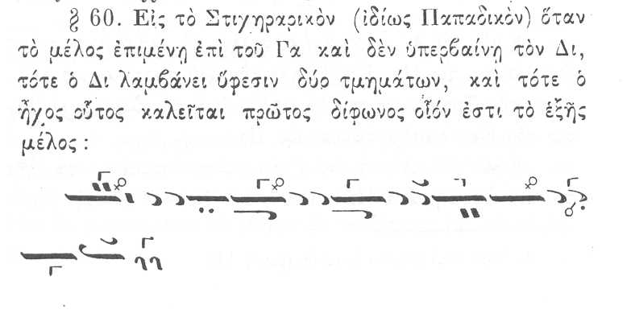
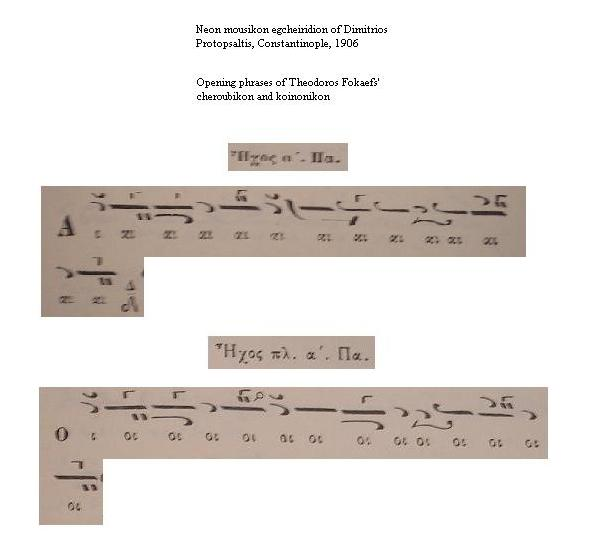
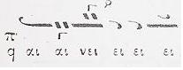
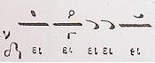
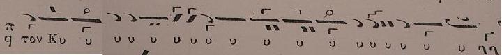

Example phrase
Taken from the page of Kekragarion First Mode

{kind=link}
Interpretations
(some examples below were extracted by S. Gugushvili)
Compare the DI flat done by the following 3 old psaltai
Fr. Dositheos [wma, 98 Kb]
Fr. Firfiris [wma 189 Kb]
L. Sfikas [ wma, 150 Kb]
and the flatter DI as interpreted by K. Katsoulis, L. Angelopoulos, his choir and one of his students
K. Katsoulis (offered by G. K. Michalakis)
Melos [mp3, 25 Kb]
Parallage [mp3, 25 Kb]
Notice how Katsoulis' intervals are different between his parallage and melos.
Lykourgos Angelopoulos [mp3, 53 Kb]
Greek Byzantine Choir [wma, 37 Kb]
John M. Boyer [wma, 100 Kb]
And here is a sample by Metr. Elias Qhubran in Arabic
[mp3, 83 Kb]
Discussion
See also the discussion on Agaliasthe Dikaioi about the same topic.
S. Gugushvili:
I was listening to randomly selected pieces from Dimitri's page on Kekragarion in mode 1 and what drew my attention was the way John Boyer was doing DI flat in the phrase "eisaAkouson...". This flat is explicitely notated in the Anastasimatarion and I guess everybody understands which phrase I mean. IMHO John's DI flat is too low for this particular thesis. Here are my objections:
a) Such an overflattened DI sounds unnatural. I acknowledge that this is a subjective argument and also Karas et al have a different perception of natural/unnatural.
b) The few credible psaltai I listened to don't bring DI as low as John does, listen e.g. to Dositheos, Sfikas etc.
c) John's flat DI could be justified in a Sabah phrase evolving around GA, resting on GA, ending on GA, but not in this case.
I would like to hear theoretical/practical justifications for John's flat DI.
J. M. Boyer:
First of all, I think it's pretty clear that we have different ideas as to what qualifies someone as being a "credible psalti." To me, Angelopoulos is a credible psalti. That being said, he has a tendency to execute elxeis more extremely than others, as we all know.
The next thing is to realize that none of the psaltai from the Patriarchate sing the same version of the Kekragarion I did, at least, none of the recordings on Dimitri's page are of the same melody. Since there is no comparable phrase in the version they are singing, a comparison cannot be made.
So, how "credible" is, say, Fr. Kartsonas of the Holy Mountain, whose recording is on Dimitri's site as well? I know nothing about him, but he flats Di roughly the same amount in his rendering of the same phrase.
Now, why I sing it the way I do:
1) Because that's what my first Greek teacher (LA) does. The fact that you don't view my teacher as a credible psalti really doesn't matter to me one way or the other. As GKM would say, "I do what I have heard."
2) Because Simon Karas has a flat of 4 units in the same place in his theoritikon (vol. a', p. 253), pretty much exactly what I performed.
3) Because Ga is the dominant tone (despozontos fthongos) in this part of the thesis, and the flip up to Di is an unaccented neighbor-tone. When Ga is dominant in the Lower first mode (Eso Protos), Di is attracted down to it, especially when it is a neighbor tone. If it were a passing tone, I wouldn't (and didn't, later in the recording) flat it nearly as much.
S. Gugushvili:
Nobody denies that DI is flattened (after all what is the yphesis doing there?), it's the degree of flatness that is a subject of disagreement. The DI flat of Angelopoulos' school could find justification in the following phrase from Dimitri Giannelos' theoretikon, but it is clear that the phrase of the first mode diphonos that he provides is different from the thesis in the Kekragarion: the melody evolves around GA, spends time on GA and ends on GA.

{kind=link}
The Patriarchal committee of 1881 provides a similar example:

{kind=link}
G. K. Michalakis:
SG: a) Such an overflattened DI sounds unnatural. I acknowledge that this is a subjective argument and also Karas et al have a different perception of natural/unnatural.
They have NO PERCEPTION whatsoever of PSALTIC intervals... they used INSTRUMENTS
and NOT oral/aural tradition to learn.... and INSTRUMENTS are NOT voice (just
by the harmonics and therefore perception differs...)
SG: b) The few credible psaltai I listened to don't
bring DI as low as John does, listen e.g. to Dositheos, Sfikas etc.
Listen to Iakovos as well. Listen to Katsoulis as well (although he does OTHER bad intervals elsewhere). The BEST = DOSITHEOS...
SG: c) John's flat DI could be justified in a Sabah phrase evolving around GA, resting on GA, ending on GA, but not in this case.
There is NO sabah in psaltki.. ONLY in transitional lines from barys heptaphonos
back down to "special intervals".
SG: I would like to hear theoretical/practical justifications
for John's flat DI.
More research
Example of a flat DI phrase like the one discussed here from a Koinonikon of John Koukouzelis
performed by the Orthodox Hellenic Byzantine Choir (OEBX) directed by M. Makris.
[wma, 150 Kb]
(extracted by S. Gugushvili from the original site of ecclesia.gr containing two melismatic chants by OEBX)
D. Koubaroulis: The flat DI is done differently by different members of the choir. As a result it sounds fuzzy to me.
Example of the same phrase in different pieces of the same book. In the first phrase the DI is not explicitly notated flat, in the second one it is.
(extracted by S. Gugushvili)
(click for larger)

{kind=link}
Examples from the Koinonikon of Ioannis Protopsaltis
(extracted from S. Gugushvili)
1.

{kind=link}
kyr-Basilakis Emmanouilidis [wma, 70Kb]
2.

{kind=link}
kyr-Basilakis Emmanouilidis [wma, 60 Kb]
3.

{kind=link}
kyr-Basilakis Emmanouilidis [wma, 150 Kb]